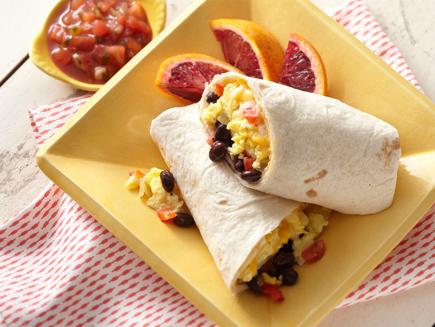

Southwest Breakfast Burrito

The ultimate combo between southwest cooking style with the added benefit of a mexican-inspired breakfast burrito. This burrito will melt in your mouth due to its rich flavoring of varied ingredients.
The following recipe will yield 20 burritos.
Ingredients
- 12 large eggs
- 2/3 cup of milk
- 1/2 teaspoon salt
- 2 tablespoons of butter
- 1/2 red onion, diced
- 1 tomato, diced
- 1/4 cup of chopped fresh cilantro
- 1 (3.5 ounce) canned diced jalapenos (Optional)
- 1 (1 ounce) package taco seasoning
- 1 1/2 cups shredded Cheddar cheese
- 20 (6 inch) flour tortillas
Directions
Prep Time: 50 minutes, Cook Time: 15 minutes
- Gather all ingredients
- Whisk together the eggs, milk, and salt in a large bowl. Heat butter in a large skillet over medium-high heat. Pour in egg mixture; cook and stir until eggs are completely set, about 5 minutes.
- Break up cooked eggs into small pieces and place into a large bowl, set aside.
- Heat the same large skillet over medium heat. cook and stir sausage and garlic in the hot skillet for 5 minutes, add onion; continue to cook and stir until sausage is crumbly, evenly browned, and no longer pink. Drain and discard any excess grease.
- Transfer sausage to the eggs in the bowl. Stir in tomato, cilantro, jalapenos, and taco seasoning until well combined. Allow mixture to cool to room temperature, then stir in Cheddar cheese.
- Lay a tortilla onto your work surface, then spoon some of the egg filling halfway between the bottom edge and the center of tortilla. Flatten filling into a rectangular shape with the back of a spoon. Fold the bottom of tortilla snugly over filling, then fold in the left and right edges. Roll burrito up to the top edge, forming a tight cylinder. Repeat with remaining ingredients.
- Wrap individual burritos tightly with plastic wrap and store in the freezer until ready to serve.
- To serve, heat burritos in the microwave until hot, 3 to 4 minutes.
allrecipes - southwest breakfast burrito